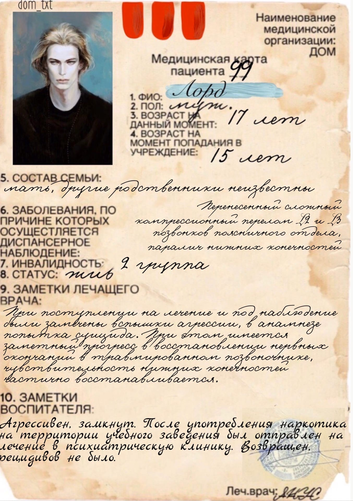
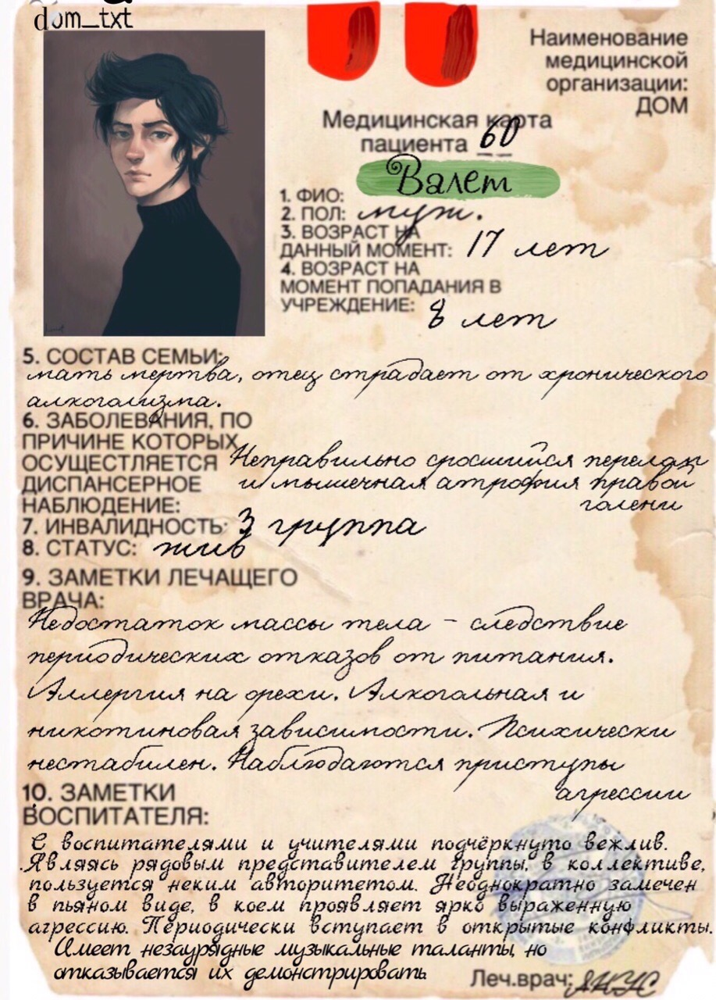
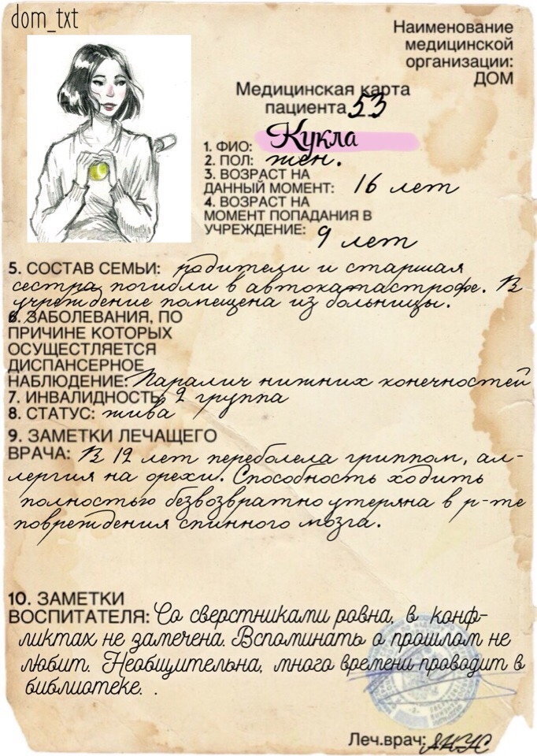
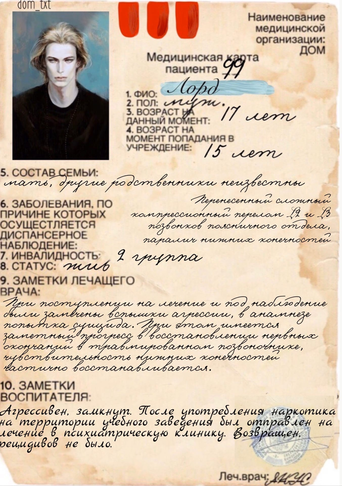
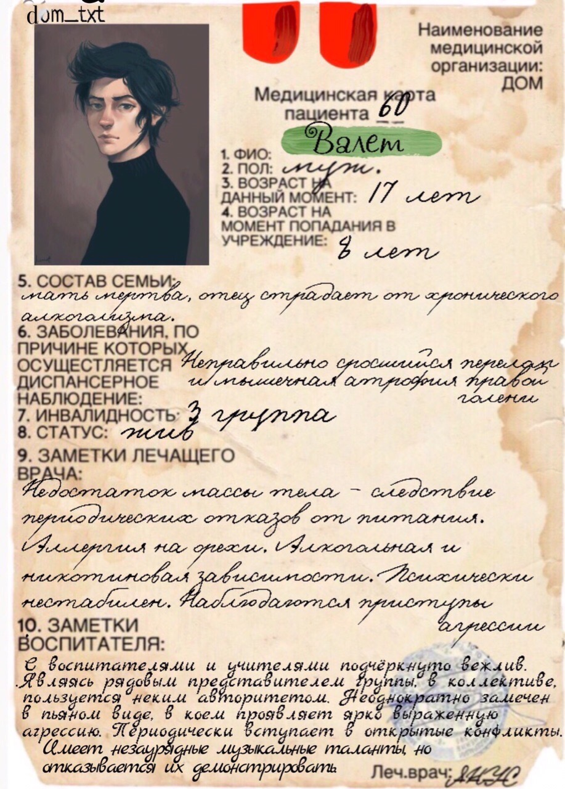
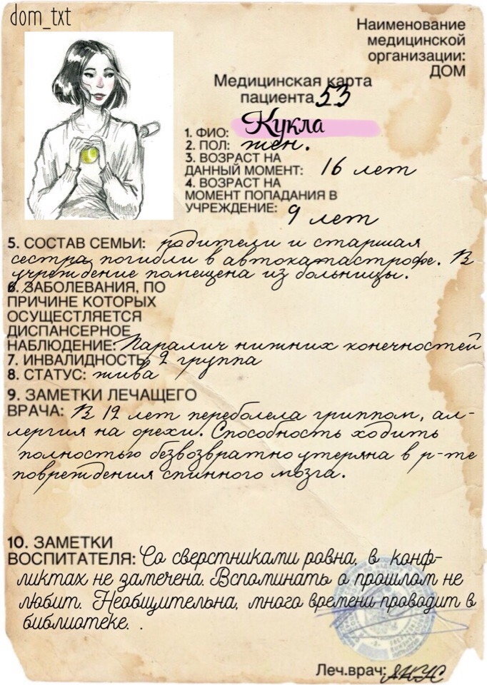

— В историях болезней, хранящихся в Могильнике, имеются специальные наклейки. Жёлтые, синие и красные. Их же вклеивают в личные дела. Не буду сейчас рассказывать о жёлтых и синих, но одна красная полоска означает, что ты асоциален и неуравновешен. Две — что склонен к суициду и нуждаешься в усиленном контроле психотерапевта. Три — что страдаешь неизлечимым психическим расстройством и нуждаешься в стационарном лечении, которого Дом тебе предоставить не в состоянии.
Для сотен тысяч людей "Дом, в котором..." - книга-пароль, по которому узнают "своих".
На окраине города, среди стандартных новостроек, стоит Серый Дом, в котором живут Сфинкс, Слепой, Лорд, Табаки, Македонский, Черный и многие другие. Неизвестно, действительно ли Лорд происходит из благородного рода драконов, но вот Слепой - действительно незряч, а Сфинкс - мудр и загадочен. Табаки, конечно, не шакал, хотя и любит поживиться чужим добром. Для каждого в Доме есть своя кличка и каждый проживал в нем за один день столько, сколько в Наружности мы иногда не проживаем и за целую жизнь. Каждого Дом принимал или отвергал. Дом хранил уйму тайн, и банальные "скелеты в шкафах" - лишь самый понятный угол незримого мира, куда нет хода из Наружности, где перестают действовать привычные законы пространства-времени. Дом - это нечто гораздо большее, чем просто интернат для детей, от которых отказались родители. Дом - это их отдельная вселенная.
Медицинская карта
 




